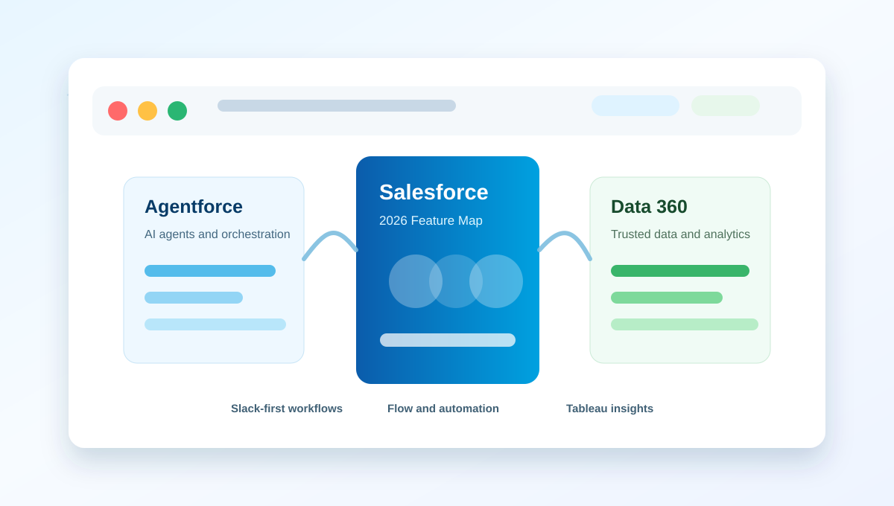

Multi-Agent Orchestration in Agentforce
让多个 Agentforce agents 像统一团队一样协作处理端到端流程，并在不同渠道共享上下文。
Salesforce releases since Jan 2026
Summer 26 官方定位是让人类员工与 AI agents 更顺畅协作，重点包括多 agent 编排、Slack-first 工作流、实时数据激活和 AI 驱动的客户互动。

Announced May 11, 2026
Summer ’26 官方定位是让人类员工与 AI agents 更顺畅协作，重点包括多 agent 编排、Slack-first 工作流、实时数据激活和 AI 驱动的客户互动。
让多个 Agentforce agents 像统一团队一样协作处理端到端流程，并在不同渠道共享上下文。
提供 50 多个开箱即用的 IT 服务 AI agents，可在 Slack、Teams 和 IT Service Desk 中识别意图并主动解决员工问题。
通过安全开放的 MCP 集成，让 AI agents 直接查询 Tableau 分析引擎，并受 Agentforce Trust Layer 保护。
推出 Help Agent、新 Portal 体验和简化定价，帮助客户通过更动态、个性化、对话式的界面自助解决问题。
独立进行 24/7 网站与邮件对话，识别并资格审核买家，把高质量线索交接给销售。
实时捕获并结构化通话、邮件、会议等客户互动数据，写回 Salesforce，为 Agentforce Sales 提供可信交易上下文。
面向调度的控制台，提供实时预约更新、地图路线、并排日程，以及 Agentforce 推荐最近且合格的技术人员。
基于动态客户行为集中管理个性化优惠，跨渠道放大促销 ROI，并用智能洞察闭环归因。
AI-first 电商店面，兼顾企业级能力和开箱即用的简单体验，帮助团队更快上线并管理数字店铺。
用预测式 AI 评分发票风险，并由 Agentforce 推荐催收计划、触达节奏、升级时机和操作动作。
把 CRM 上下文与 Slackbot 对话式 AI 带到销售工作的 Slack 界面中，让 Agentforce Sales 主动开发、跟进和管理管道。
连接监管、政策、风险和控制管理，并在实时流程中拦截不合规动作。
为外勤销售、重点客户经理和医学科学联络员提供离线可用的每日音频摘要，聚合 HCP 账户上下文。
用 AI 自动处理保修有效性检查和理赔状态，减少处理时间，让团队专注复杂问题。
把门店数据整合为 HQ 与外勤团队的单一事实源，帮助消费品团队从销售趋势和执行数据中发现缺口并行动。
把学生洞察和 AI 驱动的风险提醒带入 Slack，帮助教职员工更早识别风险并协同支持学生成功。
把分散安全数据源统一为数据 fabric，将告警转化为风险评分，更快发现异常和安全威胁。
Sources
页面内容基于 Salesforce 官方新闻稿整理；功能名称保留英文，中文说明为摘要翻译。部分 Spring ’26 功能的 GA 状态以官方注释为准。